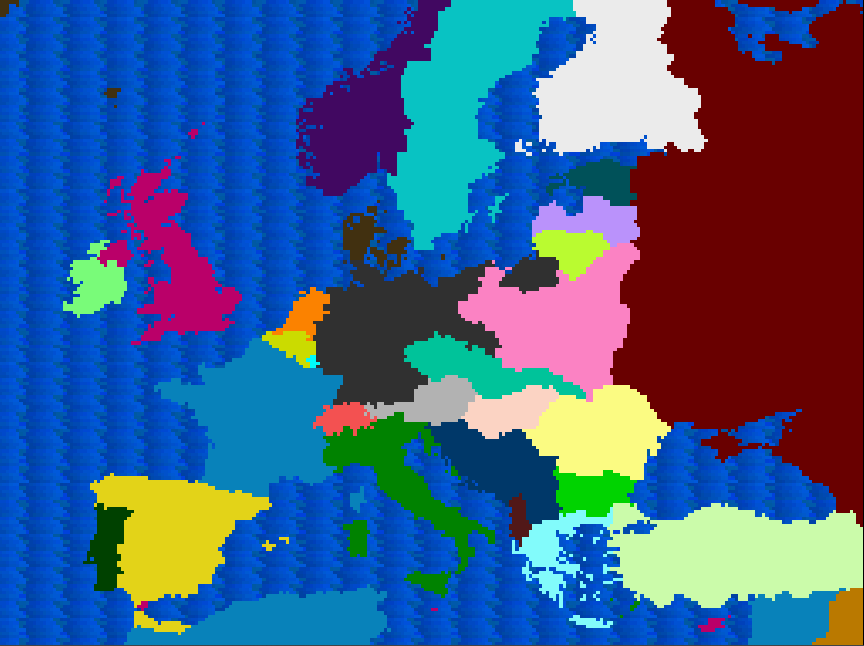
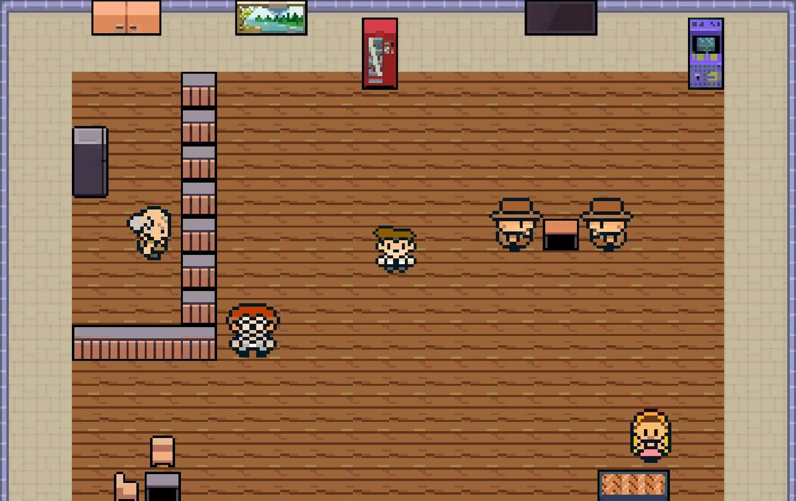
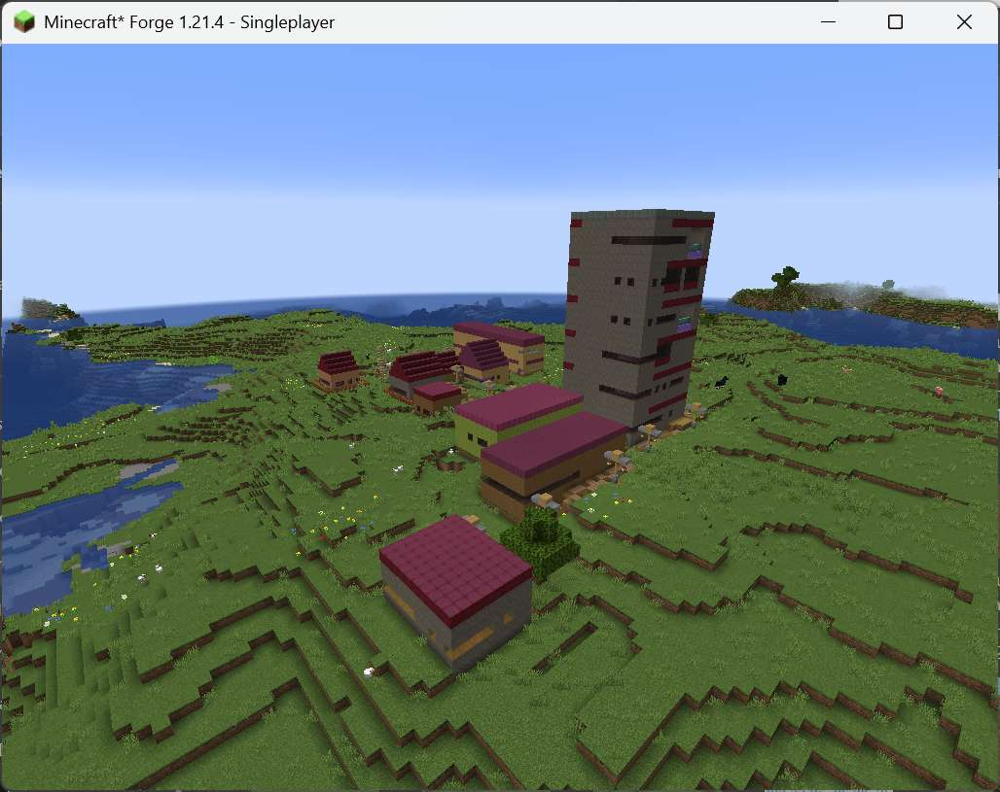

About me
Computer Engineer from the Universidad Politécnica de Madrid and Master's student in Video Game Development.
I've taken part in several projects related to procedural content generation, a field I'm especially interested in and the subject of my Bachelor's Thesis. Although my background is mainly technical, I also have basic musical training and enjoy exploring the more creative side of the medium on my own.
I'm looking to grow as a game programmer, since I'm strongly motivated by the blend of creativity and technique that games require. I bring a strong learning ability, an interest in innovation, and enthusiasm for collaborating in multidisciplinary teams.
Projects

Rayado Vallecano
Video game developed as a group project for the Video Game Fundamentals course, where I was responsible for, among other things, composing the soundtrack.
View project
Bachelor's Thesis
My Bachelor's Thesis at UPM, related to Procedural Content Generation and Interactive Genetic Algorithms.
View project
Experiments
A lab of small prototypes, tech demos and technical explorations outside the flow of commercial game development.
Explore experiments →Contact
Write to me at jonasrodriguezunanyan@gmail.com or reach out on LinkedIn.